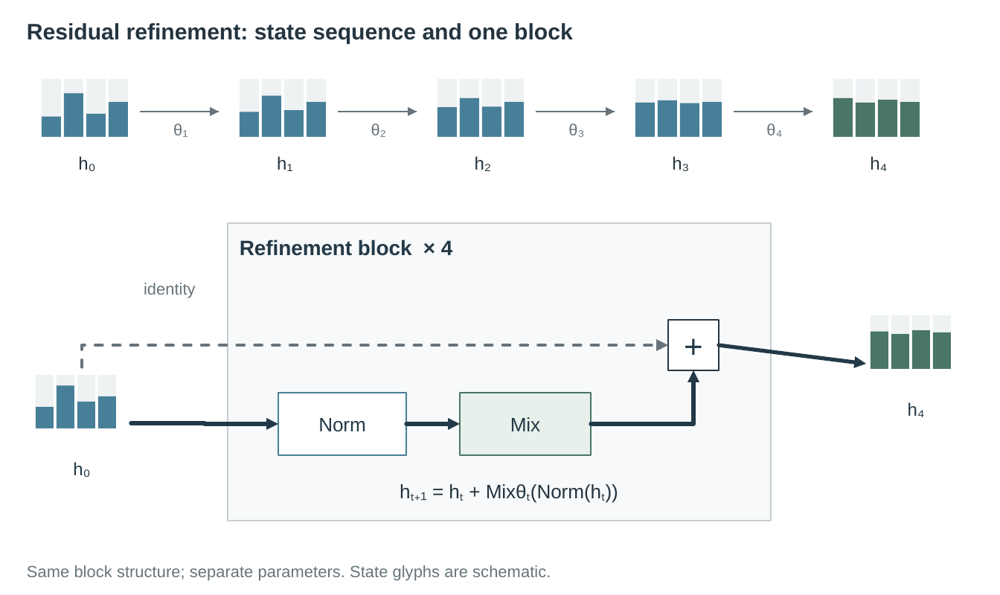
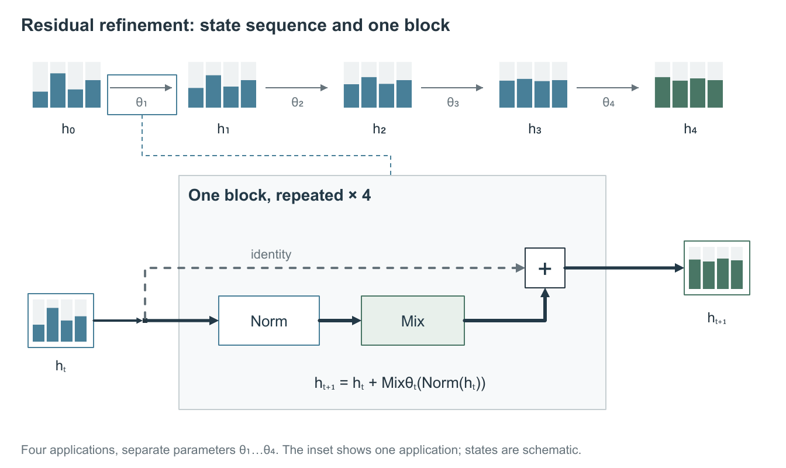
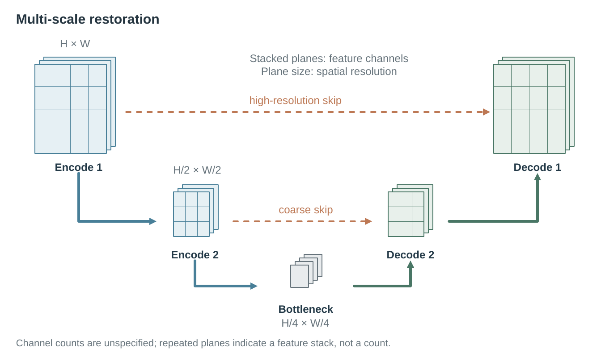
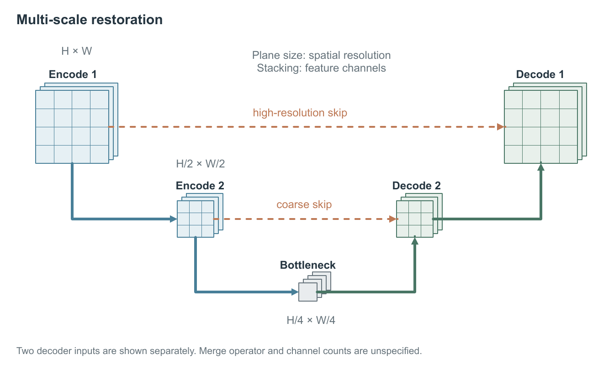
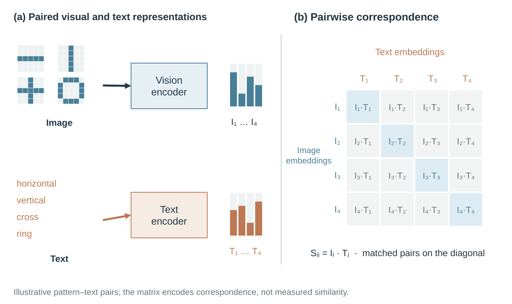
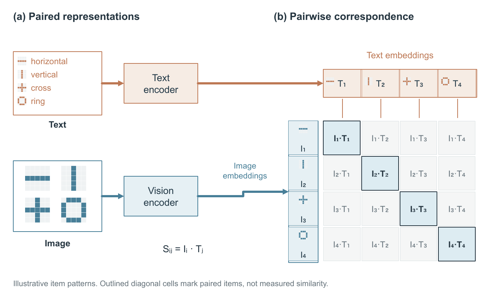
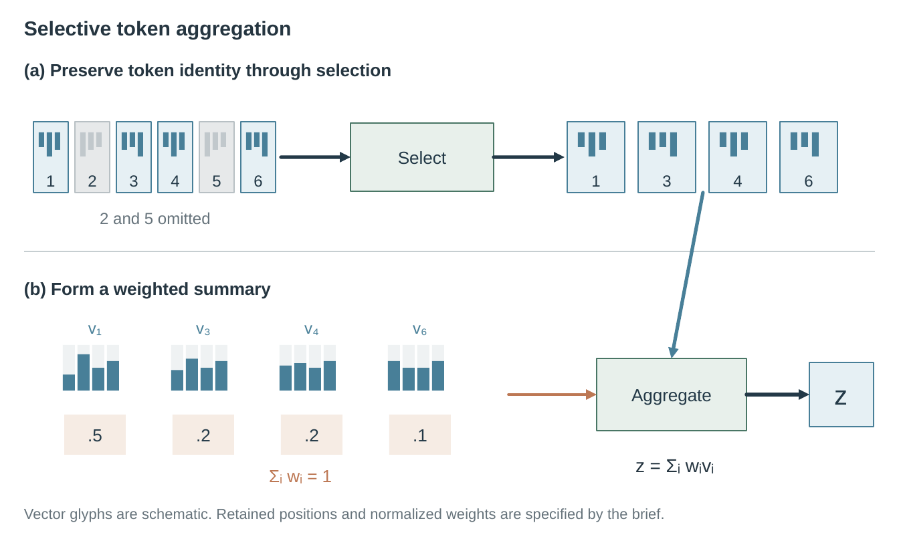
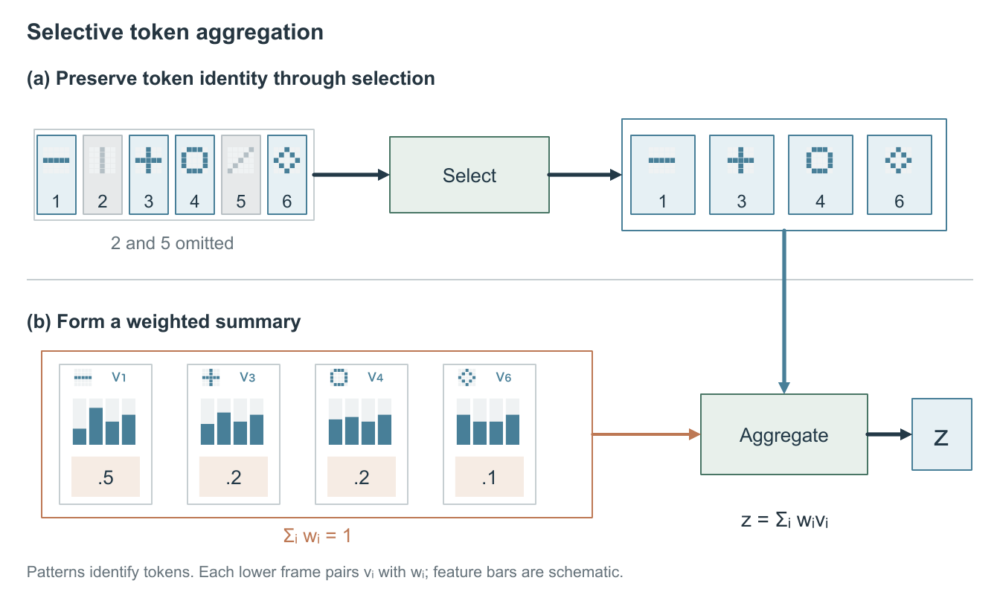

반복 블록한 입력 지점에서 주 경로와 우회 경로가 갈라지고, 상단의 확대 대상과 상세 블록이 이어집니다.수정 전피드백 반영편집 가능한 PPTX · 크게 보기
다중 해상도화살표가 특징 평면의 실제 경계에 닿습니다. 해상도 비율은 1 : 1/2 : 1/4로 유지합니다.수정 전피드백 반영편집 가능한 PPTX · 크게 보기
두 분기와 대응 행렬각 분기를 행·열에 연결하고, 예제부터 축까지 같은 항목 표식을 유지합니다. 대각선에는 테두리를 더했습니다.수정 전피드백 반영편집 가능한 PPTX · 크게 보기
토큰 선택과 집계선택된 묶음과 가중치·벡터 쌍의 범위를 표시하고, 같은 토큰 패턴을 전후에 유지합니다.수정 전피드백 반영편집 가능한 PPTX · 크게 보기